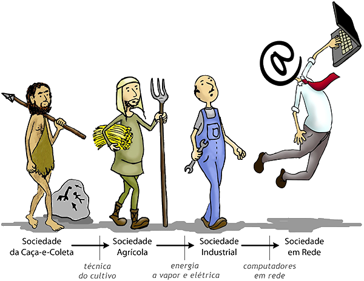

Bacharelado em Sistemas de Informação - UNIRIO
"O curso de Bacharelado em Sistemas de Informação visa a formação de profissionais da área de Computação e Informática para atuação em pesquisa, gestão, desenvolvimento, uso e avaliação de tecnologias de informação aplicadas nas organizações." (Currículo de Referência da SBC, 2003)
O Bacharelado em Sistemas de Informação da UNIRIO é um curso vespertino/noturno de graduação com duração prevista de 4 anos, com carga horária total de 3.240 horas-aula em regime de crédito semestral. Atualmente o curso BSI-UNIRIO oferece 72 vagas anuais, com duas entradas semestrais de 36 alunos através do Sistema de Seleção Unificado (SiSU), que é o processo seletivo baseado no resultado do Exame Nacional do Ensino Médio (ENEM).
Sistemas de informação são descritos em termos de suas dimensões tecnológica, organizacional e humana, o que exige uma abordagem multidisciplinar. Nosso curso BSI-UNIRIO propicia uma formação básica sólida em Sistemas de Informação, Ciência da Computação e Matemática, além de propiciar formação com ênfase no estudo das tecnologias, das organizações e de fatores humanos.
Os sistemas de informação baseados em computador são cada vez mais relevantes em nossa sociedade conectada. As organizações contemporâneas têm na tecnologia da informação um elemento estratégico uma vez que as soluções tecnológicas automatizam processos organizacionais através da coleta, armazenamento, processamento e disponibilização da informação.
O Bacharel em Sistemas de Informação possui um vasto campo de atuação podendo desempenhar funções de analista, projetista e programador de sistemas de informação; gerente de projetos em informática; e analista de suporte em ambientes computacionais.
